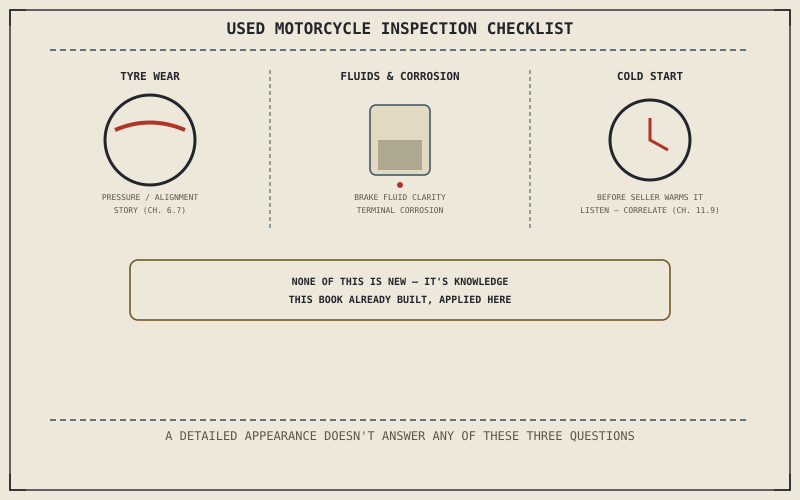

Chapter 15.4 named the informational risk a used purchase accepts in exchange for a lower price. This chapter is the direct tool for reducing that risk: a specific set of checks, most of them already fully explained earlier in this book, that a buyer can actually perform on a specific motorcycle before handing over any money.
Chapter 15.4 closed by pointing here: the tool that reduces a used motorcycle's informational risk. This chapter is that tool.
Reading Tyre Wear as a Diagnostic Record
Chapter 6.7 already taught tyre wear as a genuine record, not just a symptom — center wear as a pressure story, shoulder wear as a cornering and underinflation story, uneven or one-sided wear as an alignment story. Reading that record on a specific used motorcycle is one of the highest-value checks available in an inspection, precisely because Chapter 6.7 already explained exactly what each pattern actually means, turning a few minutes examining the tread into real information about how the bike has genuinely been ridden and maintained.
Checking Fluids and Corrosion Signs
Chapter 10.6 established brake fluid clarity as part of routine maintenance, and Chapter 10.7 named terminal corrosion as a common, visible sign of neglect at the battery. Both are direct physical evidence, checkable in minutes, of how well-maintained a specific bike has actually been — cloudy or discolored brake fluid, or corrosion visible at the battery terminals, are exactly the kind of tangible signs that turn Chapter 15.4's abstract informational risk into a concrete, inspectable fact about the machine in front of you.
Nearly every check this chapter recommends was already fully explained earlier in this book — tyre wear patterns, fluid condition, and correlation-based noise diagnosis. Inspecting a used motorcycle properly means applying knowledge this book has already built, not learning an entirely new skill from scratch.

A diagram of a used-motorcycle inspection checklist: reading tyre wear patterns, checking brake fluid clarity and battery terminal corrosion, and performing a cold start test while listening for correlated noises.
The Cold Start Test and Listening for Trouble
Starting the engine cold, before a seller has had any chance to warm it up beforehand, is one of the single most revealing tests available to a buyer in the field, since several genuine faults hide once an engine reaches operating temperature. Chapter 11.9's correlation method — noticing what a sound ties to, engine RPM, road speed, or nothing at all — applies just as directly to a used-bike inspection as it does to diagnosing a bike already owned, and a cold start is simply the moment that method has the most to work with.
A Common Misconception, Cleared Up Early
It's a common assumption that a clean, freshly detailed appearance is a reliable proxy for good mechanical condition. Chapter 13.6 already showed that "purely cosmetic" rarely tells the whole story, and the same lesson applies directly here: a bike can be detailed to look pristine while genuinely neglected maintenance sits underneath, invisible to a glance. The specific checks this chapter described — tyre wear, fluid condition, a cold start — matter more than surface appearance precisely because they reveal what a wash and polish can't hide.
Where This Leads
Part XV is complete. Every part of this book, from the engine's first stroke to a used bike's cold-start test, has been building toward the same underlying argument. Part XVI closes it directly: there is no perfect motorcycle, only a map of the compromises each design makes.
Key Concepts to Remember
- Reading tyre wear patterns applies Chapter 6.7's diagnostic reading directly to a used motorcycle's actual pressure, cornering, and alignment history.
- Brake fluid clarity and battery terminal condition are direct, checkable physical evidence of a bike's actual maintenance history.
- A cold start, checked before a seller can warm the engine, and correlation-based listening reveal faults a warmed-up test ride can hide.
Cross-References
| ← Ch. 6.7 | Established reading tyre wear as diagnostic information; this chapter applies that same reading directly to a used-motorcycle inspection. |
| ← Ch. 11.9 | Established correlation as the fastest way to narrow an unidentified noise; this chapter applies that same method to a cold-start inspection. |
| ← Ch. 13.6 | Established that "purely cosmetic" rarely tells the whole story; this chapter applies that same warning to a freshly detailed used motorcycle's appearance. |
| → Ch. 16.1 | Opens Part XVI with the book's closing argument: every choice is a trade, not a flaw. |